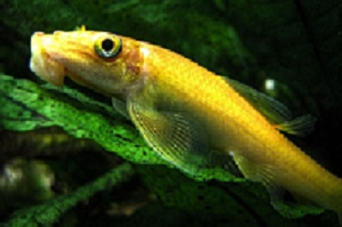
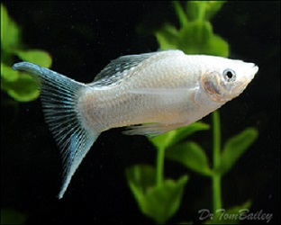
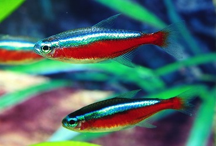
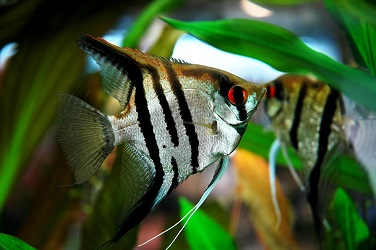

For All Your Tropical Fish Tank Needs...

Bottom Feeders
Bottom feeders are key to any fish tank.
Algae Eaters keep the walls of your tank clean.
Bottom feeders eat waste that settle at the bottom on the tank.
Amount that you should have in your 10 gallon tank: 1.
Amount that you should have in your 20 gallon tank: 2.
Amount that you should have in your 50 gallon tank: 5.
Amount that you should have in your 100 gallon tank: 10.

Basic Fish
A lot of basic fish are for new and peaceful communities.
The Molly fish,for instance, is easy to care for and a friendly addition to any fish tank.
Amount that you can have in your 10 gallon tank: 3.
Amount that you can have in your 20 gallon tank: 5.
Amount that you can have in your 50 gallon tank: 10.
Amount that you can have in your 100 gallon tank: 20.

Schools of Fish
Schools of small and friendly fish are great additions to any aquarium.
The tetra fish for instance, must come in schools of at least 3.
They are a little shy, but very colorful!
Amount that you can have in your 10 gallon tank: 5.
Amount that you can have in your 20 gallon tank: 8.
Amount that you can have in your 50 gallon tank: 20.
Amount that you can have in your 100 gallon tank: 40.

Advanced Fish
Advanced fish are very territorial and hard to care for.
The Angelfish, for example, is beautiful but will bully other fish if it does not have enough space.
Amount that you can have in your 10 gallon tank: 0.
Amount that you can have in your 20 gallon tank: 1.
Amount that you can have in your 50 gallon tank: 5.
Amount that you can have in your 100 gallon tank: 10.